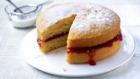

How to bake a victoria sponge
Instructions
-
Step 1
Heat the oven to 180C/350F/Gas 4.
-
Step 2
Line two 18cm cake tins with baking parchment.
-
Step 3
Cream the butter and the sugar together until pale. Use an electric hand mixer if you have one.
-
Step 4
Beat in the eggs.
-
Step 5
Sift over the flour and fold in using a large metal spoon.
-
Step 6
The mixture should be of a dropping consistency; if it is not, add a little milk.
-
Step 7
Divide the mixture between the cake tins and gently spread out with a spatula.
-
Step 8
Bake for 20-25 minutes until an inserted skewer comes out clean. Allow to stand for 5 minutes before turning on a wire rack to cool.
-
Step 9
Sandwich the cakes together with jam, lemon curd, or whipped cream and berries, or just enjoy on its own.